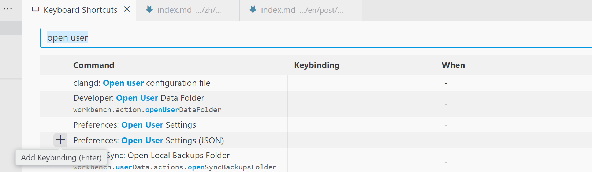

Code, easier✨
Your VSCode Assistant
Ctrl + Shift + P
If you need to do something in VSCode, you can press Ctrl + Shift + P to search for it. For example, if you want to change settings but manually opening settings.json is too tedious, you can:

After pressing Enter, settings.json will be right in front of you. If you need to frequently perform this action, you can bind a shortcut for it in Keyboard Shortcuts (open with Ctrl-k Ctrl-s):
Layout
Hide Activity Bar and Status Bar
I’ve configured shortcuts in the image below to toggle the Activity Bar and Status Bar. Hiding these can make the interface cleaner.

Place Terminal Tab and Code Tab Together
Press Ctrl+Shift+P → Search for Terminal: Move Terminal to Editor Area in the command palette to move the terminal into the Editor Area. Other similar actions include Move Terminal to Panel, Create New Terminal in Editor Area, etc. Of course, you can bind a shortcut for frequently used actions.
An applicable scenario is: if you are learning a programming language that has a REPL (like Haskell, Lisp, Python…), you can split the Editor Area into two parts, one for the code and one for the Terminal REPL. If needed, you can edit files and import them in the REPL (like :l foo.hs in GHCi). This way, it‚Äôs more convenient, and you can switch focus between the code tab and terminal tab with Ctrl+1 / Ctrl+2.
Another similar solution: Open the Secondary Side Bar with Ctrl+Shift+B, then drag the terminal to the Secondary Side Bar.

Editor Area
Rainbow Guidelines
In Settings (GUI), type @id:editor.bracketPairColorization.enabled @id:editor.guides.bracketPairs and select the options you need. editor.bracketPairColorization.enabled is enabled by default, while editor.guides.bracketPairs is off by default. You can set it to true or active to enable. The true effect colors all parentheses, and the active effect only colors the outer parentheses closest to the cursor. I think active is enough, and here’s the result:

Use Ctrl+Shift+\ to jump between the closest paired parentheses to the cursor, useful for checking nested expressions, corresponding to % in Vim Normal Mode. If your focus is in the Terminal, you can use Ctrl+Shift+\ to jump between terminal tabs.
Shortcuts
-
Tip
Hover your cursor over a button in the GUI, and if the button has a corresponding shortcut, a tooltip will show the shortcut key (many programs follow this design philosophy). So, if you find yourself frequently clicking a button, stop and check its hotkey.
-
Ctrl-b：toggle side bar.
Here’s a related story: someone submitted an issue requesting a toggleExplorerVisibility configuration in VSCode. A user replied “Ctrl-B to toggle side bar” and closed the issue. Why do I know this? Because I also thought my need was toggleExplorerVisibility, and the lesson learned is: knowing the correct names of components is important üò£.
-
Alt-←/→：Go back to the previous cursor position / move forward to the next cursor position.
This is particularly useful when navigating through function calls, in combination with F12.
-
Ctrl-[ / Ctrl-]：Indent the current line left/right.
Similar to Vim’s > / < in Visual Mode. I don’t find Vim’s version very smooth because you can only perform the operation once after selecting, and to make further indentations, you need to select again.
-
Alt-↑/↓：Move the current line up/down.
-
Shift-Alt-f: Format code, provided a formatter is configured.
-
Ctrl-(Shift-)Enter: Create a new line below (or above) the current cursor position, with the cursor jumping to the start of the new line.
Corresponds to o(O) in Vim Normal Mode.
From the 2025-02-19 update: After the VSCode update, Copilot Suggestions (GitHub Copilot: Open Completion Panel) now occupy Ctrl-Enter, which can be changed in Keyboard Shortcuts. -
Ctrl-k Ctrl-w
Close all tabs in the Editor Area.
-
Conflict Avoidance
Direct conflicts are shown when performing keybinding actions, but in cases like this, where the leading key = other shortcut keys, no conflict is shown. However, in this case, Copy is essentially broken because Ctrl-c will act as the leading key, and after pressing it, VSCode will wait for the chord key. You can observe this in the status bar.
Extensions
-
Bluloco Light Theme (Author: Umut Topuzoğlu)
A very beautiful theme.
-
Remove empty lines (Author: Alexander)
Deletes all empty lines in the selected area. You can call it via Ctrl + Shift + P or bind a shortcut for it.
Miscellaneous
Some small settings in User Settings (JSON) include:
-
Change the background color of hover widgets (e.g., function descriptions provided by the Language Server);
-
Change the zoom level;
-
Rainbow bracket guide line.
{
"workbench.colorCustomizations": {
"editorHoverWidget.background": "#edeeee", // Set the hover widget background color
},
"window.zoomLevel": 1,
"editor.guides.bracketPairs": "active"
}
Some Useful Windows Shortcuts
Ôºàü™ü epresents the Windows key.Ôºâ
-
ü™ü
Press the Windows key and type text to search for apps, settings, files, etc. After finding the match, press Enter to open it.

-
ü™ü + Arrow keys
Win + ↑：Maximize the current window
Win + ←/→：Snap the window to the left/right
Win + ↓：Exit fullscreen / Minimize -
ü™ü + v
Show clipboard history (the maximum capacity is unknown, but records are lost when shutting down). You can also select and enter emojis, symbols, and emoticons here.

-
Alt-Tab
Switch between windows on the current desktop.
-
Ctrl-(Shift-)Tab
Switch between tabs in the current application (browser, VSCode). Different applications may sort the tabs differently—some by access order (VSCode), others by creation order (Edge).
-
Alt-F4
Close the current window.
-
Ctrl-w
Close the current tab in Edge.